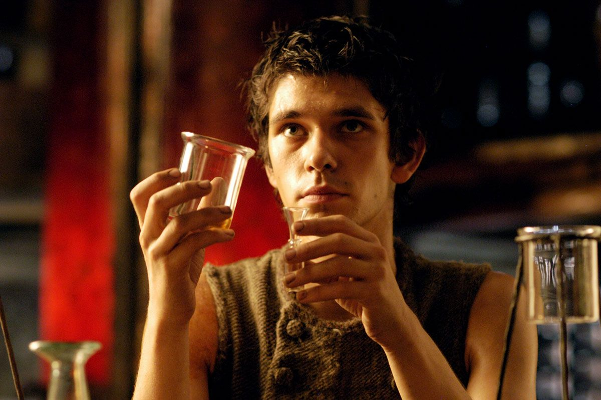
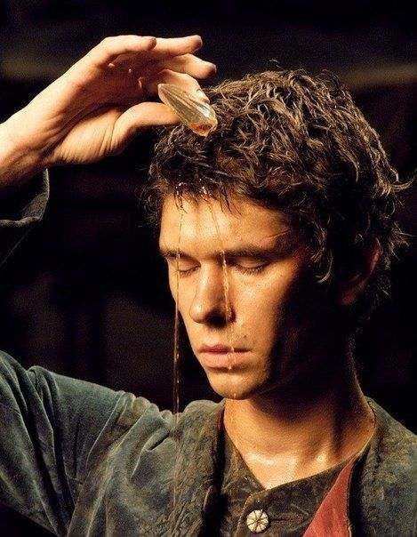

“Perfume: The story of a murderer” is a historical fantasy novel written by the German author Patrick Süskind. To the present day the story remains the second best selling German language novel of all time.
The story begins with the birth of Jean-Baptiste Grenouille, who is born at a dirty fish market, somewhere on the streets of Paris, and immediately rejected by his own mother, which signifies only the beginning of him leading a life alienated and unaccepted by society.
The little boy spends the early years of his childhood working as an apprentice at the stores of many craftsmen. However there is something very peculiar about him, this being an astounding sense of smell, allowing him to differentiate the scents spreading all throughout the city. Nevertheless this exceptional ability he possesses comes at a price, he himself is completely scentless, lacking a very important piece of what it means to be a human being. Even though the people he comes in contact with, can never pinpoint the reason behind his unappealing and somewhat disturbing presence, deep down most of them can sense that something is off.
The lonely outsider spends the majority of his free time wandering around the city, trying to memorize all the individual scents that touch his nostrils. Being completely submerged in the pleasures his sense of smell has to offer, one day he’s caught by surprise, when the air becomes filled with a unique, previously unknown smell to him. The intrigued boy follows the source of the scent, only to realize that it comes straight from a young virgin girl in her late pubescent years. Completely intoxicated by the freshness and beauty of the smell, Grenouille becomes convinced he has to steal her scent and carry it with him forever. He fails to realize the absurdity and impossibility of accomplishing his goal, but instead he takes her life and stays near her dying body until the scent wears off. Soon after Grenouille learns about Giuseppe Baldini, a very well-known and respected master at his craft, making perfumes. Fortunately for Grenouille, Baldini is exhausted and overpowered by old age so his skill is gradually decreasing and the quality of the perfumes he produces is worsening. Grenouille goes to visit him, and with very little effort manages to copy the exact perfume Baldini’s successful competitors had produced. Amazed by the unbelievable gift the young man has, Baldini decides to hire him as an apprentice in order to get his business back in track. During the years Grenouille works for Baldini, he learns many a thing for the different techniques used in perfume production.
Not long before Baldini’s departure from the world of the living, Grenouille leaves Paris, setting on his way to Grasse, where he expects to further deepen his knowledge on the subject. However on the way there, he increasingly becomes disgusted with the smell of humanity, to a point where he can no longer stand it, so he decides to isolate himself and spend the rest of his life living in a cave, surviving only by eating the nearby wild vegetation. This goes on until the tranquility of his life is disturbed by the sudden realization that the reason behind his unbelonging comes from nothing but the fact that he is completely scentless. This is his moment of enlightenment, the moment the scentless apprentice sees his great opportunity to take control over humanity and start manipulating people into accepting him, by using the craft of perfume making.
Rejoining society, he starts working for a local perfume shop in Grasse, waiting patiently to grab the chances that come on his way, until one day he breathes in and feels a scent even purer and more admirable than the first one. Only this time he knows for certain, he must find a way to preserve it in a physical form and take it with him, maybe even use it to enchant humanity.
At short notice the town becomes aware of the presence of a killer, lurking on the streets, targeting young girls, left untouched except for their hair being cut off and them being stripped naked. He carries out the murders very carefully, without leaving a single trace behind, managing to take 24 victims, till he finally has a chance to make his final strike and take the life of the most innocent and pure of them all, the daughter of the most prosperous nobleman in town.
However this time Grenouille compelled by the success of his carefully planned deed, forgets to pay close attention to detail and leads the police straight back to him. He is sentenced to death and the entire town is finally free of the burden and fear they’ve been carrying around for a very long time. Little do they know, that Grenouille had already crafted the perfect perfume, when he’s brought to the town square where the execution is held. The soul and purity of the innocent virgins contained in the scent is so overwhelming, it almost casts a spell on the entire crowd gathered there, to a point where they don’t see him as the frightening killer who had been their greatest threat, but they admire him and bow before him in adoration. The crowd overpowered with feelings of great ecstasy and joy engages in a mass orgy right before his eyes.
Standing there and witnessing the disgust of the entire humanity, he becomes so filled with aversion, contempt and bitterness that he realizes that not even this control he had established over the masses holds the potential of bringing him any happiness and meaning. He decides there’s nothing left for him there anymore, returns to the fish market where he was born, pours an entire bottle of the perfect perfume over himself, surrendering over to the masses and letting them devour him
